設定狙い
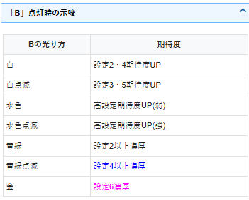
「店長カスタム」
店長カスタムについて
主に1000G毎にカスタムするタイプと、時間帯でカスタムする2種類。
G数タイプで1000Gにカスタムした場合、1000G以降の1回目のトロフィー出現するタイミングで出現。
時間帯タイプは12:00-15:59にカスタムした場合、12:00過ぎた1回目のトロフィー出現するタイミングで出現。
主なメーカーの店長カスタム
サミー
主な機種 カバネリ、北斗シリーズ、東リベなど
①出現タイミング
1000G毎に設定したゲーム数を跨いだ1回目のタイミングでトロフィー出現。
②出現パターン
・無し(通常の確率)
・銅トロフィー固定(北斗は金トロ固定？)
・ランダム出現
・投入設定の最高のトロフィー
山佐
主な機種 ゴッドイーター、ブラックジャック、鉄拳など
※モンキーターンはカスタム実装してない
①出現タイミング
4つの時間帯で出現タイミングを設定
それぞれの区間をオフに出来る
指定した時間帯を跨いだ1回目のタイミングでトロフィー出現。
設定可能な時間帯(固定)
8:00-11:59
12:00-15:59
16:00-19:59
20:00-23:59
②出現パターン
・無し(通常の確率)
・銅トロ
・ランダム
・投入設定の最高のトロフィー
エンターライズ
主な機種 モンハンライズ、バイオre3、新鬼武者など
①出現タイミング
6つの時間帯で出現タイミングを設定
指定した時間帯を跨いだ1回目のタイミングでトロフィー出現。
設定可能な時間帯(固定)
9:00-11:59
12:00-14:59
15:00-17:59
18:00-20:59
21:00-23:59
0:00-8:59
②出現パターン
・無し(通常の確率)
・銅トロ出現率アップ
・出現なし
・トロフィー出現率アップ
・投入設定の最高のトロフィー出現
ユニバーサル
主な機種 マギレコ、ミリオンゴッド、バジリスク絆2天膳など
①出現タイミング
4つの時間帯で出現タイミングを設定。
それぞれの区間をオフに出来る。
指定した時間帯を跨いだ1回目のタイミングでプレート出現。
設定可能な時間帯(店長が任意に時間変更可能)
8:00-11:59
12:00-14:59
15:00-17:59
18:00-20:59
※指定した時間を過ぎてAT終了するとその区間は適用されない。
②出現パターン
・カスタムした任意のプレート出現
・投入設定の最高のプレート出現
・出現無し(0%)
スパイキー
主な機種 東京喰種、ダリフラなど
①出現タイミング
1000G毎に設定したゲーム数を跨いだ1回目のタイミングでトロフィー出現。
②出現パターン
・無し(通常の確率)
・銅トロフィー固定
・ランダム出現
・投入設定の最高のトロフィー
大都技研
主な機種 真打吉宗、シェイク、秘宝伝など
※クレア（ボーナストリガー）はトロフィーのみでカスタム無し
①出現タイミング
1000G毎に設定したゲーム数を跨いだ1回目のタイミングでトロフィー出現。
②出現パターン
・無し(通常の確率)
・銅トロフィー固定
・ランダム出現
・投入設定の最高のトロフィー
「あ行」
いざ！番長
設定判別
共通ベルに設定差が大きめ。共通ベルを中心に他の設定判別要素で判断。
終了画面の2以上がそこそこ出るためベース設定1の店舗だと判別難易度が下がる。
半日打てばある程度上下の判別は可能（主に共通ベル）だが短時間での判別は厳しい。
トロフィー非搭載。
共通ベル
設定1 1/74.9
設定56は1/60前後
本機の主な設定判別要素。ダイトモ利用必須。
AT引き戻し
低設定5-10%
高設定10-20%
設定6は特に引き戻し強め。設定6以外は同じくらい？
モード
設定6はチャンスAが選ばれやすそうなのでチャンスA天井が抜けにくい。
設定45もチャンスAが選ばれやすいが設定判別にはあまり使えない？
AT開始時の将軍マスあり
設定5は将軍マスありが多め。他の要素と併せて判断。
低設定30-40%
設定5 50%ちょい
設定4.6 40-50%
終了画面
高設定示唆は段階的に出やすい。
低設定 2-4%
高設定 10%前後
刀ptからのAT直撃
高設定だと稀に直撃？1.5倍程度の差なのであまり参考にならない。
CZからの当選率
青 1-3%
黄色 10-15%
高設定ほど当たりやすい
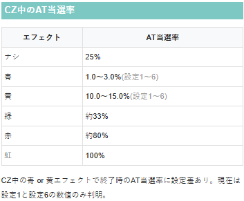
炎炎ノ消防隊2
設定判別
終了画面とRB中のキャラで判別がメイン。
特定設定否定系も多いため、店舗のベース設定や対象の時の設定などを把握しておく事が重要。
ボーナス終了画面
炎炎ボーナス後とREG・アクセルボーナス・灰焰ボーナス後で出現率が変わるので別々にカウント。
高設定示唆や確定画面が出やすい。デフォルトばかりだと危険信号。
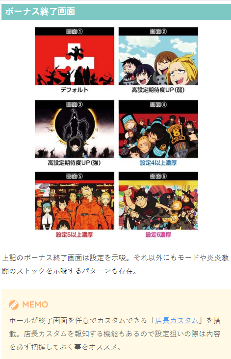
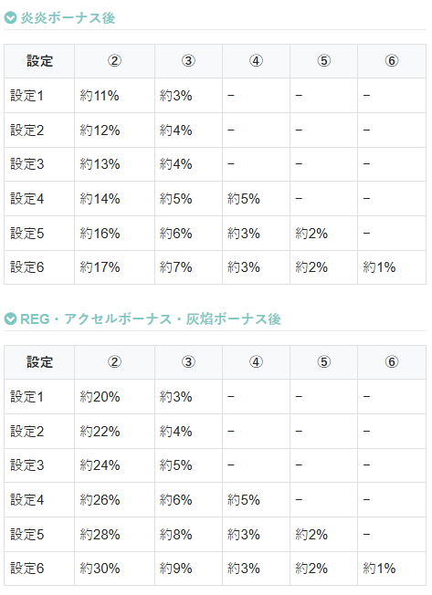
RB中のキャラ紹介
特定設定否定系が出やすい。
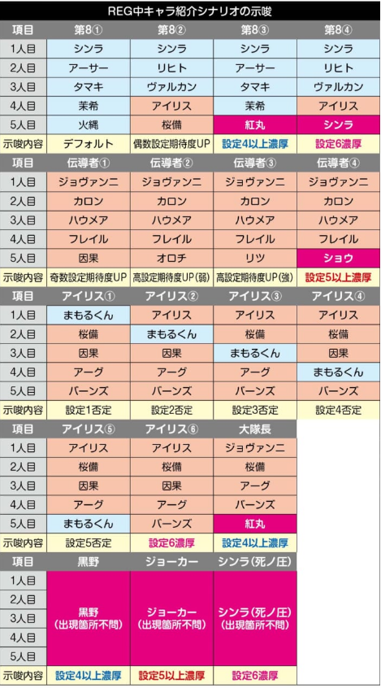
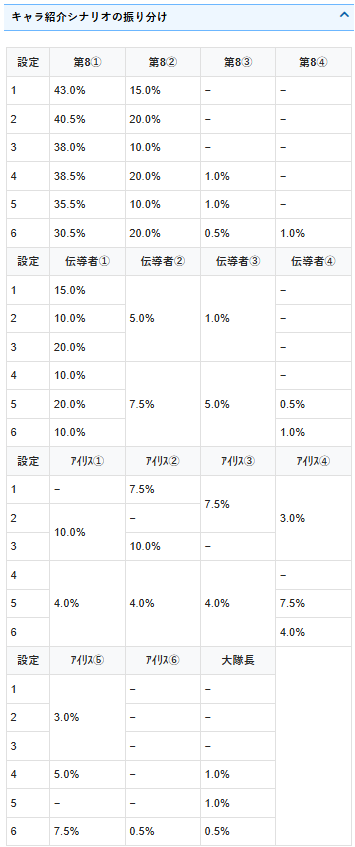
伝道者の罠中の抽選
この項目で設定判別する事はないけど一応設定差ある。
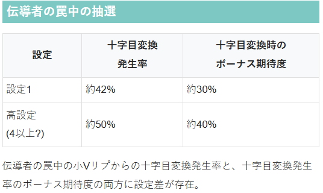
有利区間リセット時の炎炎大戦
有利区間切断のタイミングで炎炎大戦以上が出やすい。特に紅J大戦が出てくると高設定挙動になる。
ただ、有利切断をしないと確認出来ないためサンプルが集まらない。
設定判別のメインは終了画面とRB中のキャラ。
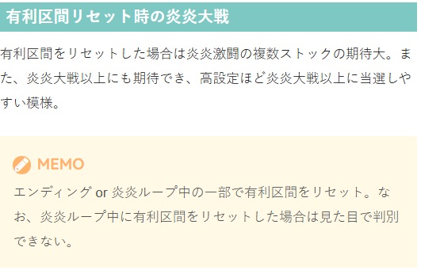
参考元
「か行」
回胴黙示録カイジ 狂宴
設定判別
レア役確率、閃き前兆突破率、モード移行、終了画面と各設定差ある部分で総合的に判断。極端に上振れ挙動しないと判別は難しそう。
閃き前兆からのCZ当選率
高設定ほど閃き前兆からCZに当選しやすい
特に青からの突破率が設定差ありそう？緑以上は差はあまり無いかも。
閃き前兆 突破率
突破率
設定1 15%(メーカー発表値)
設定6 30-40%くらい？
閃き前兆 突破率
突破率
設定1 30%(メーカー発表値)
設定6 40%くらい？
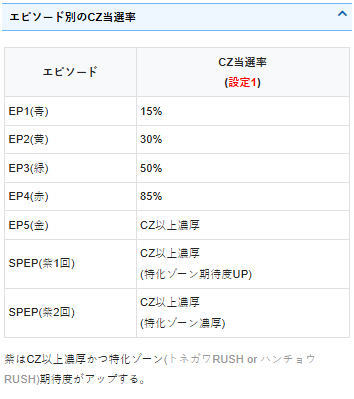
ボーナス終了画面
高設定示唆が多少使えそう
また、連チャン中はサンプル増やしやすい
低設定はデフォルト多め
画面デフォルトの割合
低設定 85-90%
高設定 70%前後
レア役確率
レア役に少し設定差あり。主にスイカに設定差あり
これだけで判別は厳しいがマイスロ登録しとい方が良い
スイカ
設定1 1/79.9
設定6 1/72.8
4役合算
設定1 1/32.4
設定6 1/29.1
トネガワラッシュ突入率
閃き前兆からのトネガワラッシュ直撃率に設定差あり
分母が小さいが1度でも出ると強い挙動？
設定1 0.4%
設定6 1.2%
モード移行率
高設定ほどモードB以上に移行しやすい
低設定は半分以上モードA
※朝イチと単発後は除く
モードA移行率
設定1.2 57.8%
設定6 30.9%
攻殻機動隊
設定判別
終了画面の高設定示唆を中心に、その他の設定差ある部分の数値で判断。単品狙いでは難易度高め。全台系でも判別が難しい印象。設定2以上が出やすいため、ベース設定1店舗の全台系なら難易度はかなり下がりそう。
AT終了画面、隠しPUSH画面
素子＆タチコマ（高設定期待度UP弱）に設定差がありそう。他の金枠456確以外はモード示唆。
デフォルト
低設定 20-25％
高設定 10-15％
素子＆タチコマ
低設定 15-18％
高設定 30-40％
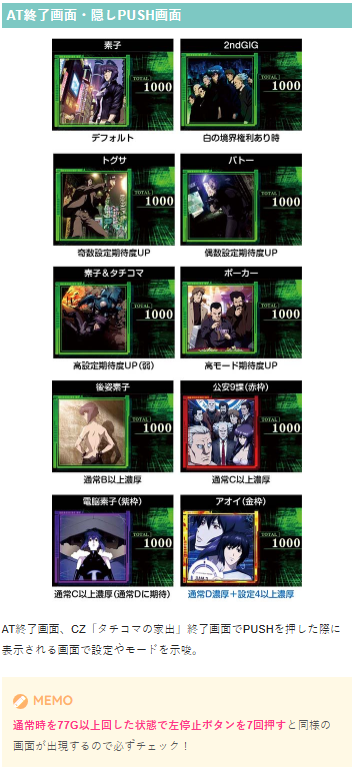
CZ失敗時の終了画面
AT終了画面とは違い、高設定示唆は参考にならない傾向。設定2以上は比較的出やすいためベース設定1の店舗では判別材料として優秀。
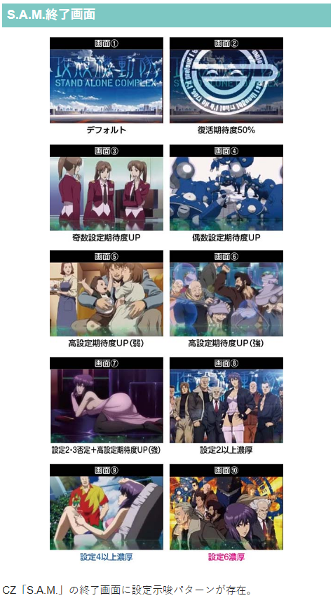
高確以上スタート
高設定ほど高確、超高確スタートしやすい。AT終了後はチェック。液晶右側を見れば高確滞在の有無はわかる。
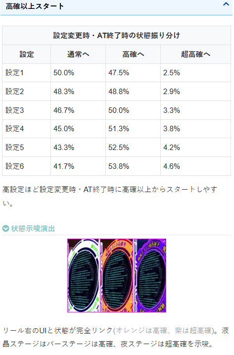
電脳ラッシュ初期ストック当選率
ストック有無は2～3倍程度差があるため複数回確認出来ると強めの挙動。
ストック保有時はリブートチャンス1G目にPUSHボタン出現して告知。
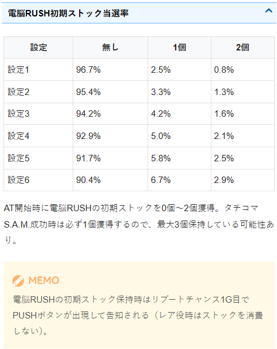
殲滅ゾーンのCZ以上当選率
青マスでの当選率に設定差が大きい。モードの天井では殲滅ゾーンを経由して当選するため見間違いに注意。
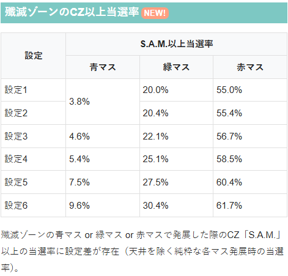
CZ「タチコマの家出」当選期待度
1.5倍程度差はあるがサンプル集まりにくい
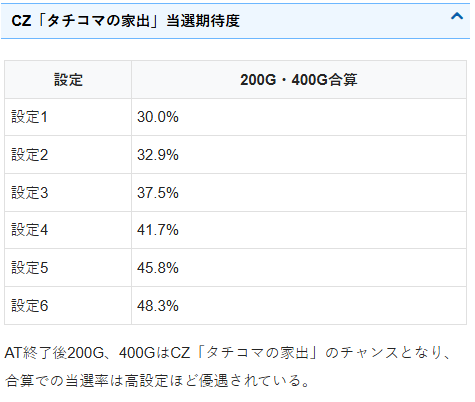
S.A.M.視覚フラグ保有率
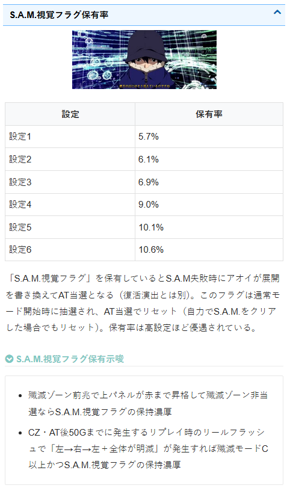
参考元
甲鉄城のカバネリ海門決戦
アイテムくじ出現率
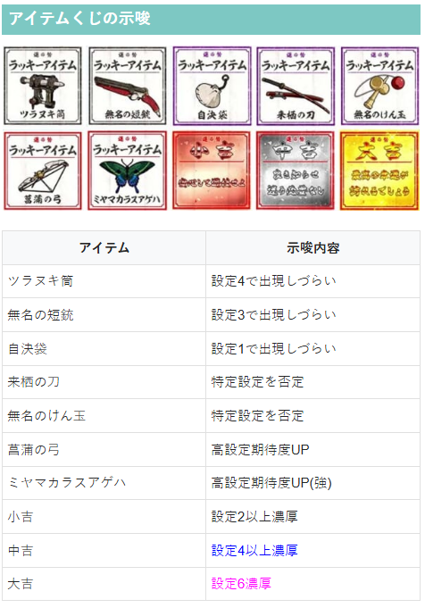
| 来栖の刀 | 設定2否定？ |
| 無名のけん玉 | 設定1否定？ |
| 菖蒲の弓(高設定示唆） | 低設定5％前後 高設定10％前後 |
| ミヤマカラスアゲハ（高設定示唆強） | 低設定1％以下 高設定2-3％ |
| 小吉、中吉、大吉 | 確定示唆 |
2.3周期の当選率
| 2周期 | 低設定30％前後 高設定60％前後 |
| 3周期 | 設定1 18.4％ 設定6 37.1％ |
ST終了時の画面
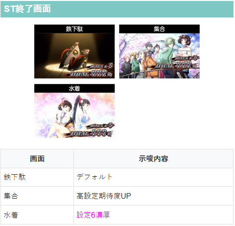
| 高設定示唆 | 低設定 2-3％ 高設定 8-10％ |
※設定6だけ出やすい可能性あり
チャンス目単独発光確率
| 低設定12-13％ |
| 高設定17-18％ |
※無名（赤）or 生駒（緑）かつ、非高確時の単独チャンス目
技術介入時の景之ボイス
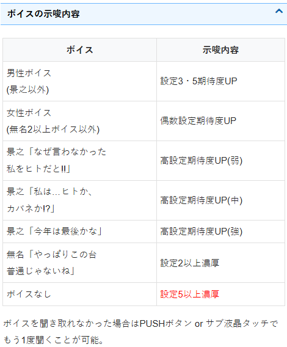
| 高設定示唆弱「なぜ言わなかった..」 | 低設定10-12％ 高設定14-16％ |
| 高設定示唆中「私は…ヒトか、…」 | 低設定1％前後 高設定2.5-3％ |
| 高設定示唆強「今年は最後かな」 | 低設定0-0.5％ 高設定1％前後 |
下段ベル（共通ベル）確率
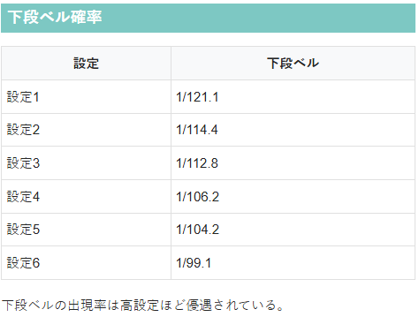
ゴッドイーター
設定判別
判別難易度高め。200.450の規定ゲーム数当選、弱レア役からのCZ当選率、高設定示唆、神堕突入率などで総合的に判断。
規定ゲーム数当選
200.450のゾーンで当選すると高設定挙動。
履歴は233前後、483前後がゾーン当選の可能性高め。
低設定 5%ちょい
高設定 10-15%
有利切断時の神堕突入率
低設定 10%前後
高設定 30%前後
各種設定示唆
・ボーナス終了画面ボイス
高設定示唆(ソーマ、レン)
低設定 10%前後
高設定 20%前後
※特にレン(示唆強)の方が差は大きめ？
・AT終了画面
高設定示唆(コウタ、ソーマ)
低設定 10%前後
高設定 20-25%
デフォルト
低設定 65%前後
高設定 40-45%
※高設定ほど色々示唆が出やすいためかデフォルトの割合が低め。
※偶数示唆はどの程度参考になるか不明
CZ当選率
設定1 1/392
設定6 1/310.6
通常時の弱レア役、チャンス目からのCZ当選率に差がある。
通常と高確の判断難しいケース多いがそこそこ設定差ある。
レア役からの直撃は高設定挙動。高設定でも1日1回見かけるかレベルだけど強めの挙動。
「さ行」
新鬼武者
設定判別
主に共通ベル(3枚役)、規定pt。それと周期当選で判別。判別難易度低め。
共通ベル(3枚役)
上段ベル揃いが共通ベルとなる。
メニュー画面から総回転数確認可能。
通常時、AT中どちらもカウント。
設定456はどれも同じくらいの数値と思われる。
低設定 1/35前後
高設定 1/27前後
規定ポイント
高設定の特徴は666ptに到達しにくい、333ptでの当選多め。111ptは低設定だとかなりレア。
設定4は低設定とあまり変わらず、設定56（特に6）で大きな設定差になる。
※1周期目と前回555pt以上到達後は次回222pt以内のため判別時は除外。
333pt以内に到達
低設定 30%前後
高設定 60%弱
666pt
低設定 20-30%
高設定 10-15%
333pt
低設定 10%前後
高設定 20-30%
111pt
低設定 1-3%
高設定 5-8%
ボーナス中のキャラ紹介、AT終了画面
高設定示唆は出にくく、設定差もあまり無い。高設定を終日打ったら何かしらの確定画面が1.2回出る程度。
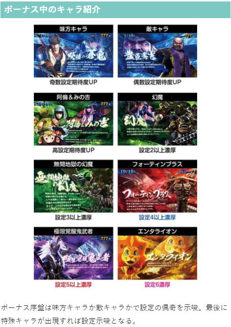
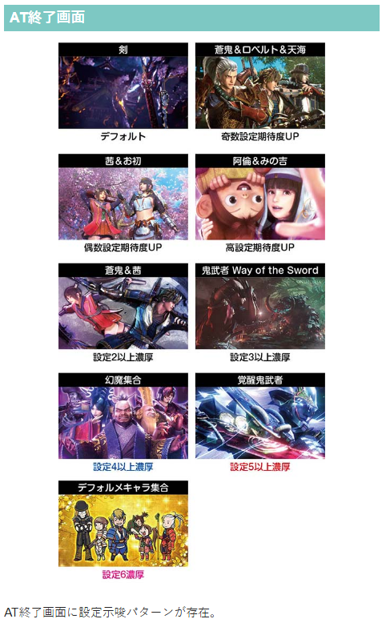
周期当選
高設定の方が4周期までに当たりやすい傾向。
規定ptに比べて設定差少なそう。
5周期以降当選
低設定 10-20%
高設定 5-10%
スーパーブラックジャック（SBJ）
設定判別
単品では判別難しそう。
全台系の場合は周りのカードや100G毎の高確移行抽選の内容次第で早めに決着つけれる？。
100G毎の状態移行
サンプル数も集めやすく、それなりに設定差があるためメインの判別要素
・100G
設定1 チャイナ84.8% ボナ高確15.2%
設定6 チャイナ76.2% ボナ高確23.8%
・200.400.600.800
設定1 チャイナ39.8% ボナ高確10.2%
設定6 チャイナ 43.8% ボナ高確 20.7%
・300.500.700.900
設定1 チャイナ12.5% ボナ高確3.9%
設定6 チャイナ 16.4% ボナ高確 9.0%
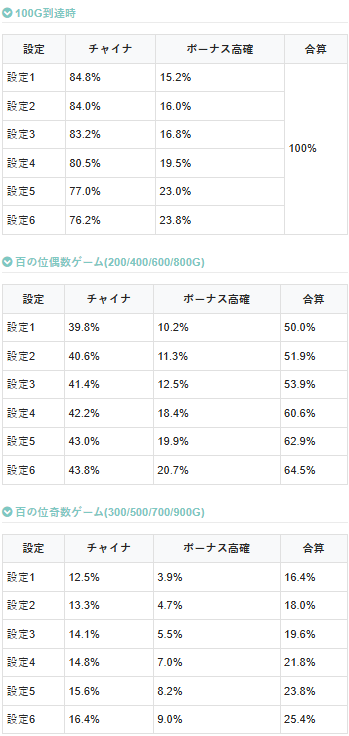
スイカ確率(斜めスイカのみ)
そこそこ設定差あり。単体で判断は危険。
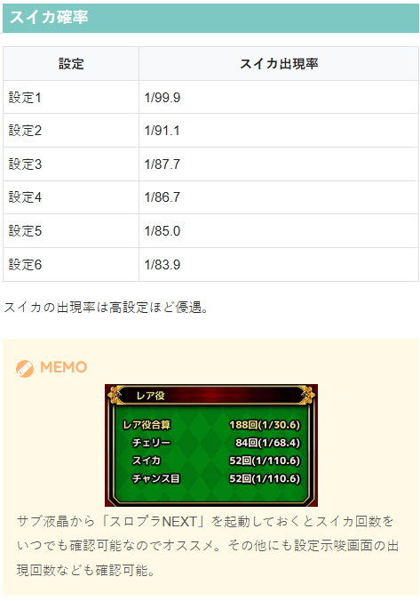
スイカからのST直撃(規定回数での当選除く)
通常ステージからのチャンス目からのボーナス高確移行率
JAPANステージ移行でボーナス高確移行となる。JAPANステージに行かないこともある？
チャイナステージからは設定差無し。
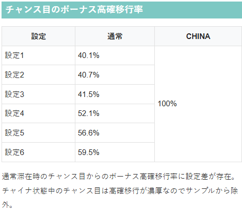
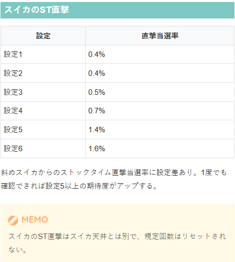
チャンス目からのボーナス直撃
そこまで設定差がない。
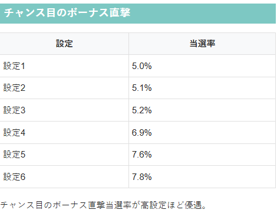
ボーナス終了後のサブ液晶
高設定示唆中(リオ)と強(リナ)に設定差がある。
高設定示唆弱は気にしなくて良さそう。
高設定示唆中(リオ)
低設定 5%前後
高設定 10%前後
高設定示唆強(リナ)
低設定 1%前後
高設定 3-5%
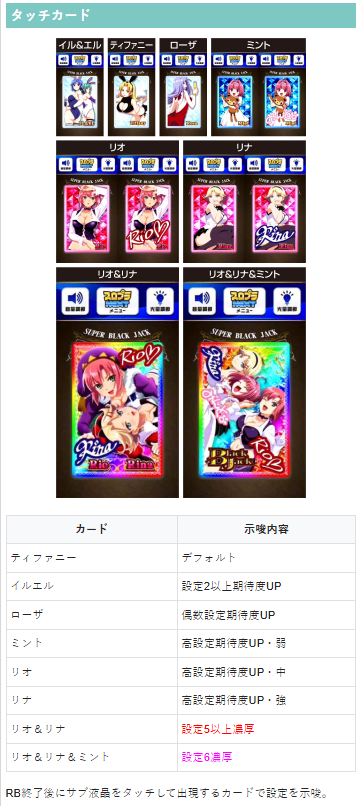
JAC中のトランプ
高設定示唆強(リナ)に少し設定差がある。
高設定示唆中（リオ）はそこまで参考にならない。
1回のJACゲームで赤ビッグは5×2回カード出現。REGは6回。
高設定示唆中(リオ)
低設定 2-3％
高設定 3-4％
高設定示唆強(リナ)
低設定 0.5％前後
高設定 1-1.5％
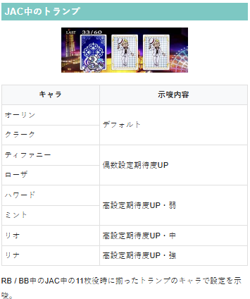
「た行」
東京喰種
設定判別
高設定ほどモード移行やレア役からのCZ当選率が優秀になる。
CZ当選率を中心に、超高確関連、リゼ、エピボ、直撃、裏ATなど解析の出ている部分を確認する。
終了画面、エンディングカードの高設定示唆強はかなり強めの示唆となる。
朝イチの挙動
高設定は朝イチ（200Gゾーン天井）100Gゾーンまでに当選しやすい。そのため全台系狙い時は朝イチの初当たりの軽さが重要になってくる。
※全56狙い以上限定かも？
液晶100Gゾーンまでの当選率
低設定 20-30％
高設定 50-60％
実ゲームで130～140Gまでの当選率
低設定 40-60％
高設定 70-80％
CZ当選率(朝イチ以外)
推定天国当選率
低設定 20-25%
高設定 35-40%
推定200-400ptゾーンでの当選率
低設定 20%前後
高設定 50%前後
※高設定ほど高モードに滞在しているため初当たりが軽くなる
レア役からのCZ当選率も高設定ほど高くなりそう 参考元 パチスロ攻略エイト(Youtube）
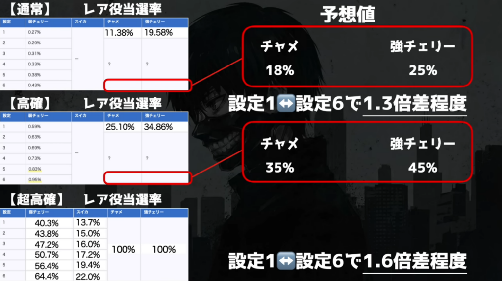
超高確中のG数と弱レア役からのCZ当選率
※超高確30Gは設定差大きい。弱チェ、スイカからの当選率もサンプルが増えてくると信頼度が高くなる。
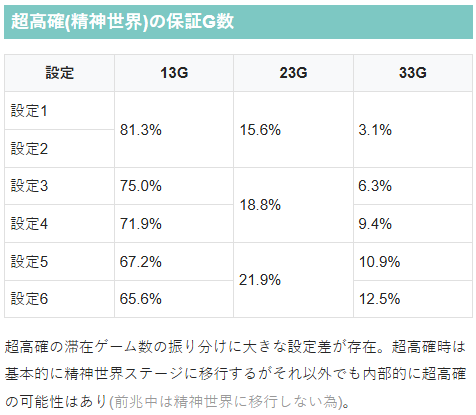
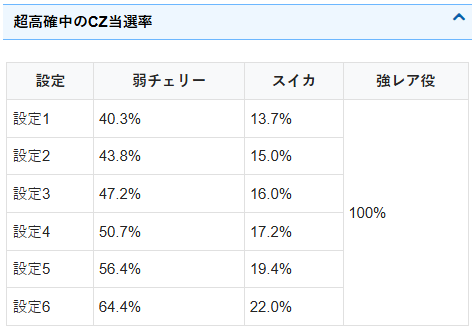
AT直撃
※設定差大きい
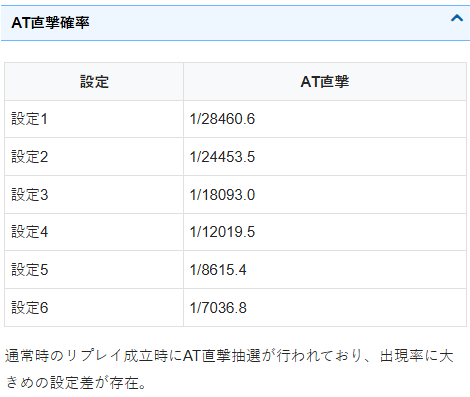
大食いのリゼ、エピソードボーナス、裏AT突入率
※朝イチは大食いのリゼが出やすいので除外。
※本前兆中のレア役で書き換え抽選してる？ため、本前兆にレア役を重ね引きしてる場合は設定差ある部分だったかわからなくなる。
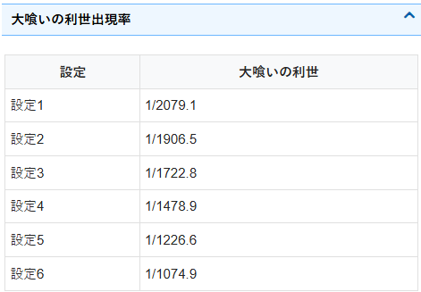
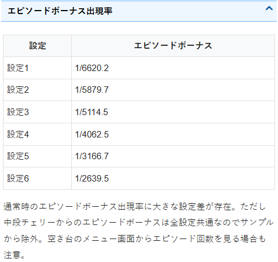
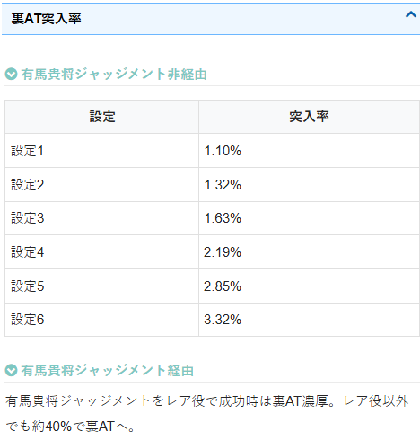
AT終了画面、エンディングカード
AT終了画面の高設定示唆
低設定 5%前後
高設定 10%前後
高設定示唆強のみ
低設定 1%前後
高設定 5%前後
※高設定示唆強が特に設定差ありそう。ベタピン店舗でリセ狩り100台消化して見た事がない。
強が複数回出現すれば高設定濃厚？弱も多少使える？
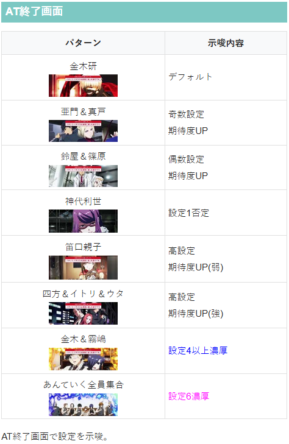
エンディングカードは偶奇判別のメインに使える。偶奇は1:2、2:1の比率で出てくるため、それなりにカード見れれば偶奇は見えてくる。高設定示唆も判別に使える。
高設定示唆強
低設定 1-2%
高設定 5-10%
高設定示唆弱
低設定 5-10%
高設定 15%前後
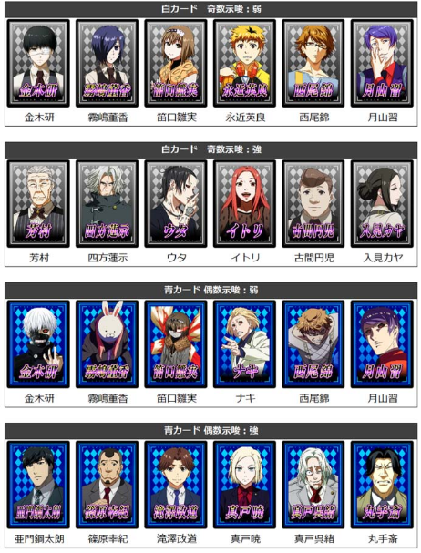
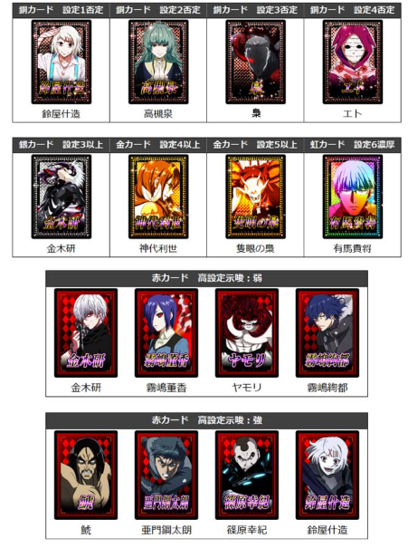
その他（打感）
高設定はモード移行が良い。
AT終了後1回目や天国モード後に天国準備やチャンスモードはかなり強めの挙動。50G毎の規定ゲーム数での前兆発生や東京上空移行の有無などでモードが絞れるケースあり。
天国に移行しやすいし、天国後に天国抜けてもハマりにくく、またすぐに天国当選は高設定挙動という印象。
普段ハイエナをしていても朝イチ以外は200-400ptゾーンでほぼ当たらない。
大食いのリゼはチャンスモード時に出るという話なので朝イチは出やすいと思われる。エピボも朝イチは出やすい。
規定ゲーム数本前兆で強レア役も引かずに当選し、大食いのリゼやエピボが出てくるのは高設定挙動。弱レア役での昇格はかなり少なめと思われる。
エンディングカードの偶奇判別はかなり優秀なので店舗の設定ベースの把握に利用出来そう。
「は行」
バイオハザードRE:3
設定判別
CZ当選率と共通5枚役をメインに、フィギュアの高設定示唆を確認。上位CZの突破率に差がありそうだが詳細は不明（設定1で50％突破？）。
単品でも判別難易度低め？全台系狙い時はボーナス終了タイミングでフィギュアが出るので高設定示唆の弱中強はパッと見で判断付くようにしておくと良さそう。
フィギュア
高設定示唆弱と中はサンプルが増えてくれば設定判別に使えそう。強は1回でも示唆として強そう。偶奇判別は示唆強の比率で判断？1日では収束しない事があるくらいの精度。
| 高設定示唆弱 NO9.10 | 低設定 | 4-5％ |
| 高設定 | 7-9％ | |
| 高設定示唆中 NO11.12 | 低設定 | 2％前後 |
| 高設定 | 4-5％ | |
| 高設定示唆強 NO13 | 低設定 | 1％前後 |
| 高設定 | 3-4％ | |
| 奇数示唆（強) NO3.4 | 奇数 | 15％前後 |
| 偶数 | 10-15％ | |
| 偶数示唆（強) NO7.8 | 奇数 | 10％前後 |
| 偶数 | 20％前後 | |
| チャーリーくん人形 NO14 | 設定2以上 | 1％前後 |
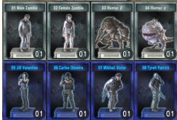
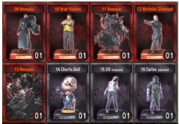
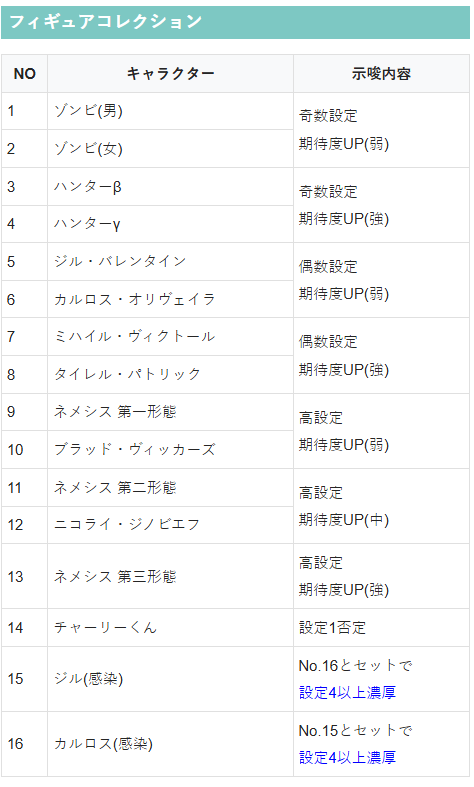
CZ当選率
高設定の特徴としてCZが軽い。200ptゾーンでの当選率、500pt(天井）での当選率に設定差がありそう。また、高設定ほどレア役からのCZ当選率も高くなる模様。
CZ当選率
低設定 1/143.3
高設定 1/110前後
200ptでの当選率
低設定 6.6％
高設定 20％前後
500ptでの当選率
低設定 25％
高設定 10％前後
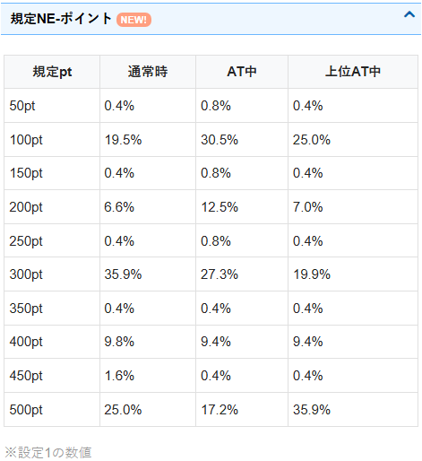
共通５枚役
共通5枚役（右下がりベル）に設定差がある。新鬼武者の共通ベルくらいに設定差があるためカウントした方が良い。数値はスロマガで実践値が出されている（有料）。 スロマガ（公式X）
AT中の共通5枚役は実践上左1stナビ時のみ出てきた。（左1st時 上段ベルor右下がりベル）
※パンデミックチャンス中はナビが出ないので見落とし注意
実践値
※1000G前後でも多少参考になる印象。2000Gくらいで数値が安定していく傾向。
設定1（4000Gくらい） 1/21
設定5（5000Gくらい） 1/17
参考元
北斗の拳
弱レア役からの当選
高設定ほど中段チェリーや強スイカ以外からも当選しやすい。 確定役は設定差あるけど参考程度。
ベル関連
通常時
平行ベル 低設定1/170 高設定1/100
斜めベル:平行ベル比率
低設定 10:1 高設定 7:1
AT小役パート中のナビ無しベル
低設定 斜めベル1/170 平行ベル1/400 合算1/120
高設定 斜めベル1/105平行ベル1/210 合算1/70
※ATが7.8セット以上継続するとベルナビの出現率が若干下がるため、7.8セット以降は斜めベルの確率が参考にならないかも。
※通常時の平行ベルは結構判別材料になる。
AT終了時のボイス
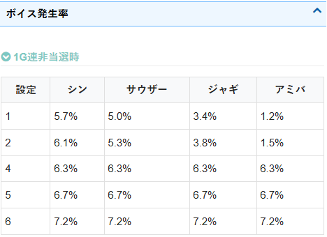
アミバは設定差5-6倍あるため強い挙動。ジャギは多少差があるけど参考程度。
有利切れ時の挙動
差枚+1900から+2000くらいで有利切れやすい。
有利切れ直後にAT終了は高設定挙動。ただし設定6でも稀に継続する。何回も有利ツラヌク様な挙動は低設定挙動。(設定4でも有利切れのタイミングでAT終わりやすい)
※有利切れのサインは、小役パート最後のJAC表示で雑魚のオラオラが1G以上出てくる。基本は2か3G続く。
その他参考程度(打感的なもの)
スイカが良く仕事する(モードアップやAT当選)
冷遇時の天国スタート多め(低設定は優遇じゃないと天国スタートあまり見かけない)
高設定はハマった時に連チャンしやすく、北斗揃いも出てくる事がある。
高設定は結局初当たりが軽い。レア役確率も軽く、モード移行優秀なので中段 や強
や強 からも当たりやすい。
からも当たりやすい。
1000ハマり超えると低設定でも高設定挙動しやすい？天井ストッパー？
北斗の拳 転生の章
設定判別
基本的にシャッター次第。余程の根拠が無ければシャッター途切れた時点でやめ。
設定差のある天破の当選率、伝承モード後の高確移行、100G毎の枠ランプ（ランプBの青点滅や確定系）などで判断。
朝カスや1000カスでトロフィー出る店では期待値プラスを維持しつつ設定狙い出来るため優秀。
積もった場合のやめ時
シャッター無し区間は設定6でも大幅に期待値マイナスとなる。
シャッターが続いている時は閉店2時間前くらいがラスト？
やめ時の目安
| 設定4 | 40あべしでシャッター無し | 残り時間関係なくやめ |
| 400-500あべしでシャッター無し | 残り8時間以上なら続行？ | |
| 設定5 | 40あべしでシャッター無し | 残り6時間以上なら続行？ |
| 400-500あべしでシャッター無し | 残り5時間以上なら続行？ | |
| 設定6 | 40あべしでシャッター無し | 残り4時間30以上なら続行？ |
| 400-500あべしでシャッター無し | 残り3時間以上なら続行？ |
896あべし以内当選率
低設定 60％前後
高設定（設定456） 90％ちょい
※一度でもシャッター出ないと高設定の可能性が下がる。
※高設定ほどモードAの選択率が下がり、モードBの選択率が上がると思われる。
天破の刻当選率
低確、通常でのレア役（中段チェリー以外）からの当選率に大きい設定差あり。
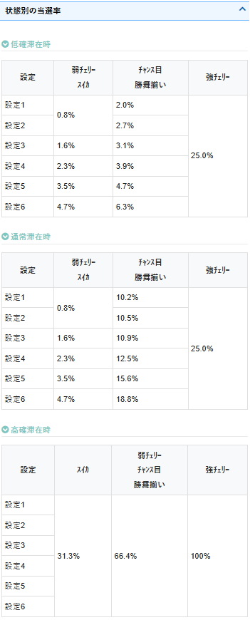
低確滞在時のレア役（強チェリー以外）での状態移行
低確からの高確移行率に設定差がある
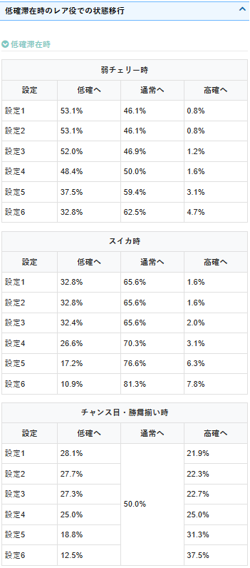
伝承モード後の状態
伝承モード後（天破後）に高確移行は設定差が大きい。天破後は伝承モードショート以上に滞在しているため、伝承モード抜け後にレア役も引かずに高確にいると強めの挙動。
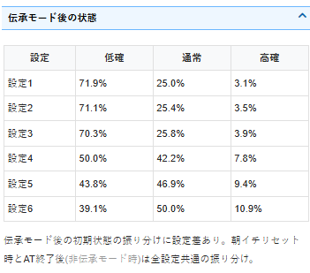
100G毎の枠ランプ
B点灯の青点滅が設定差大きい。低設定では1％も無さそう（ハイエナ時に目撃した事が無い）。高設定では4％前後くらい？
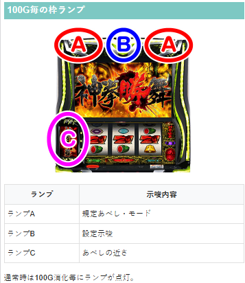
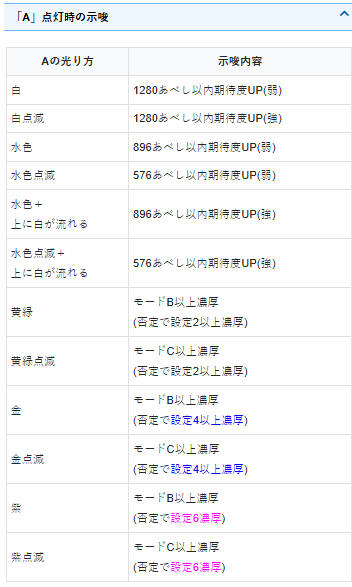
「ま行」
マギアレコード
設定判別
設定差の特に大きい部分（高設定示唆強、みたまボーナス青発展からのAT、エピボ黒江）を1回でも確認出来ればかなり強めな挙動。
そこそこ設定差のある部分（直撃、引き戻し）も複数回確認出来れば強めな挙動。
これに、弱チェ、引き戻し、ボーナスの軽さ、マギチャレ当選率等で総合的に判断。
AT直撃(朝イチ以外)
歴代シリーズ同様設定差が大きい
低設定 1/10000程度
高設定 1/4000程度
※設定変更後1回目のATまでは低設定でも直撃するため除外。
AT引き戻し確率
高設定ほど引き戻ししやすい。
低設定 5%前後
高設定 15%弱
※ATの出玉が少ないほど引き戻ししやすいため、過信は禁物。
弱チェ確率
そこそこ設定差あり。ユニメモ必須。1000-2000Gでは余程上振れないと参考にならないので注意。
ボーナス、AT終了画面
ボーナス終了画面
高設定示唆強は強めの挙動。1回でも強め。
弱はあまり気にしなくて良さそう？ 356.246の示唆はそんなに気にしなくて良さそう？
高設定示唆弱
低設定 10%前後
高設定 15％前後
高設定示唆強
低設定 1-2%
高設定 5-8%
AT終了画面
設定6は356.246の示唆が両方出やすいからデフォルト画面が少なめ？
マギアチャレンジ(さなモード除く)
そこそこ差はあるがブレる事が多くてそこまで参考にならない。
極端に上振れたり下振れした時は参考になるかも？
みたまボーナスからのAT当選率
設定差大きめ。調整屋まで昇格すると設定差無し。
エピソードボーナスのキャラ選択率
黒江が選ばれると設定差かなり大きい。
ただし黒江チャレンジ経由時は黒江エピソードとなるため注意。
初当たりボーナス
高設定は初当たりが軽い。 設定6の判別は初当たりがメイン？
特に設定6はデータ機上350G以内に9割以上当選してる。（6だけ別格？）
低設定は7か8割くらい？ 高設定ほど100.200ptゾーンでの当選率が高いと思われる。
AT中のストーリーの順番
5話からスタートだと設定否定系や確定系があるため、しっかりチェック。
1.3話スタートは奇数示唆、2,4話スタートは偶数示唆となっているがほとんど参考にならない。
エンディングカード
エンディング中レア役でカード出現。
設定否定系や確定系あるのでチェック。
高設定示唆の頻度等不明。
ミリオンゴッド神々の軌跡
設定判別
設定6のみ判別難易度が低そう。通常時の押し順ナビ15枚役（朝イチ除く）とリプ3連からの当選率で判断。
設定狙いは設定6のみを狙うのを推奨。
リプレイ3連時の当選率
設定1-5 5-10％くらい
設定6 30％くらい
※設定6だけ当選率が高い
通常時の押し順ナビ15枚役（朝イチ除く）
設定1 1-300-1/400
設定2-5 1/200-1/350
設定6 1/100
※リセット時1回当選するまでは押し順ナビが出やすい（全設定共通1/100前後？）
Z-ZONE昇格抽選
設定5が優遇されている。
ホール割
設定1から4のホール割がメーカー発表の機械割に比べ極端に低い。
低設定は据置の影響を受けている可能性もあるが明らかに低いため、確実に設定6が見込める状況だけ設定狙いする事が望ましい。設定5は打てるホール割だが低設定を打つと大幅な期待値マイナスとなるため危険。
モンキーターン
5枚役
低設定 1/40
設定4 1/30
設定5 1/25
設定6 1/22
※この機種の設定判別は5枚役でほぼ決着。
偶奇判別
偶数設定は青メダルが多い 30-40%
1と5は10%程度
激走チャージの偶奇示唆
落ち着くんだ…
この気配…
5だけ落ち着くんだ…が多い(割合7:3)
レア役からの直撃
弱レア役 456確
強レア役 高設定挙動
高設定挙動
56は9割3周期を超えない。
1周期、浜岡モード、555後以外で222当選が多い。6で50%、5で30-40%、低設定は20%？
即優出モード 設定差は2倍あるけど分母が小さいので2回以上確認出来れば信頼出来そう。
黄色メダルは高設定だと30%くらい？
低設定は10-20%？
黒メダルは高設定だと5-10%？低設定は数%？
※5枚役判別が優秀過ぎるのでおまけ程度
モンスターハンターライズ
設定判別
AT終了画面の高設定示唆強、レア役からの直撃が特に設定差大きい。
AT終了画面では特定設定否定系も出てくるためベース設定の把握も重要。
これに他の高設定示唆やクエストテーブル、カムラポイントテーブルの推移等で判断。
AT終了画面
高設定示唆強は強め。1回でもかなり強めの挙動。高設定示唆弱は複数回出ればやや強め。
ツバキは1.4.5.6示唆で2.3での出現頻度は相当低い。456の方が1より少し出やすい？
設定否定系も出てきやすいのでベース設定把握出来てると早めに判断つく事も。
野良トロフィー出やすい？
高設定示唆弱
低設定 3-4％
高設定 6-8％
高設定示唆強
低設定 1％前後
高設定 7-8％
ボーナス確定画面
稀に456確が出てくる。
偶奇示唆の差はそこまで大きくないが終日打てば最終的に偶奇が見えてくる感じ？（比率は4.5：5.5くらい）
高設定示唆は複数回出れば少し参考になる。
高設定示唆
低設定 2-3％
高設定 4-5％
AT直撃
弱レア役、強レア役どちらからでも強めの高設定挙動。
カムラポイントモード移行率
モードDループ(連続で100pt当選)が出てくると強めの高設定挙動。
高設定ほどモードD抜け後もまたモードDに行きやすい。
モードAとモードCは区別出来ない。
クエストテーブル
高設定ほど天国や天国準備に滞在しやすい。テーブルA,Bにずっと滞在していると低設定挙動。
ステチェン時の示唆やクエストのフィールドでテーブルの示唆が可能。
アイルーだるま落とし
それなりに設定差あるが、サンプルが集めにくいため参考程度。